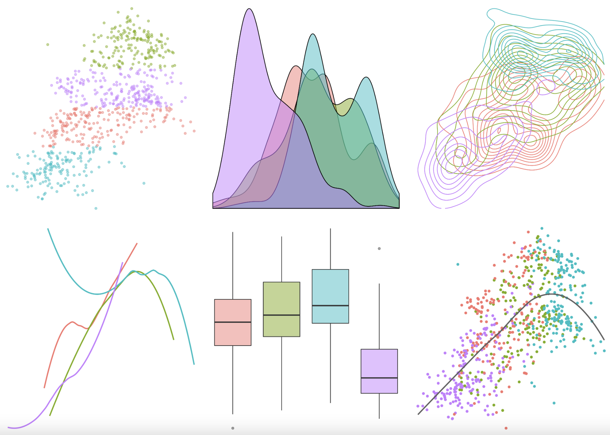
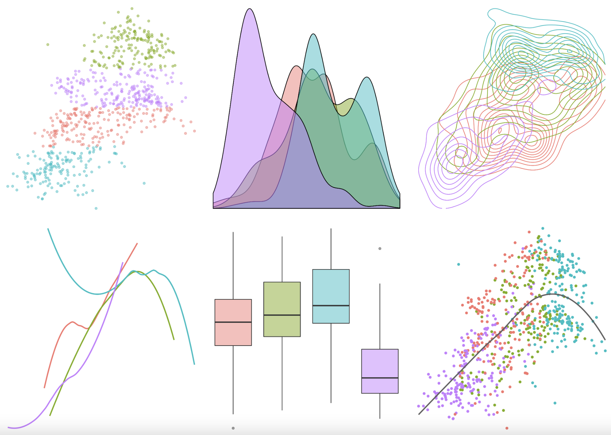

knitr::include_graphics("images/stat375-overview-image.jpg")
The primary goal of this course is to help first-time GSI appointments become more confident, efficient, and effective teachers. It aims to build in students a curiosity to persistently question their practice: Why am I teaching this particular topic? What is the most important thing that my students learn? How do I know if my students have learned it? Why have I chosen to teach it in the this manner? Why are certain students engaged and succeeding and others not?
There are three integral elements to this course. In person class meetings are the core of the experience, when you will encounter new ideas and discuss them in the context of your current teaching. Weekly assignments are an opportunity to reflect on the ideas discussed in class as well as readings. Teaching observations will occur twice during the semester and give you the opportunity to observe a different classroom environment than your own and receive feedback about your own teaching.
knitr::include_graphics("images/stat375-overview-image.jpg")